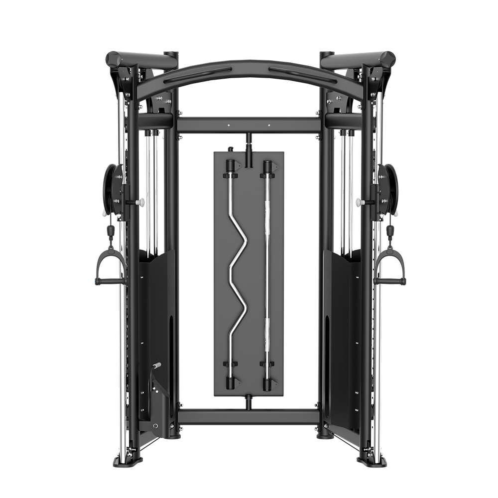
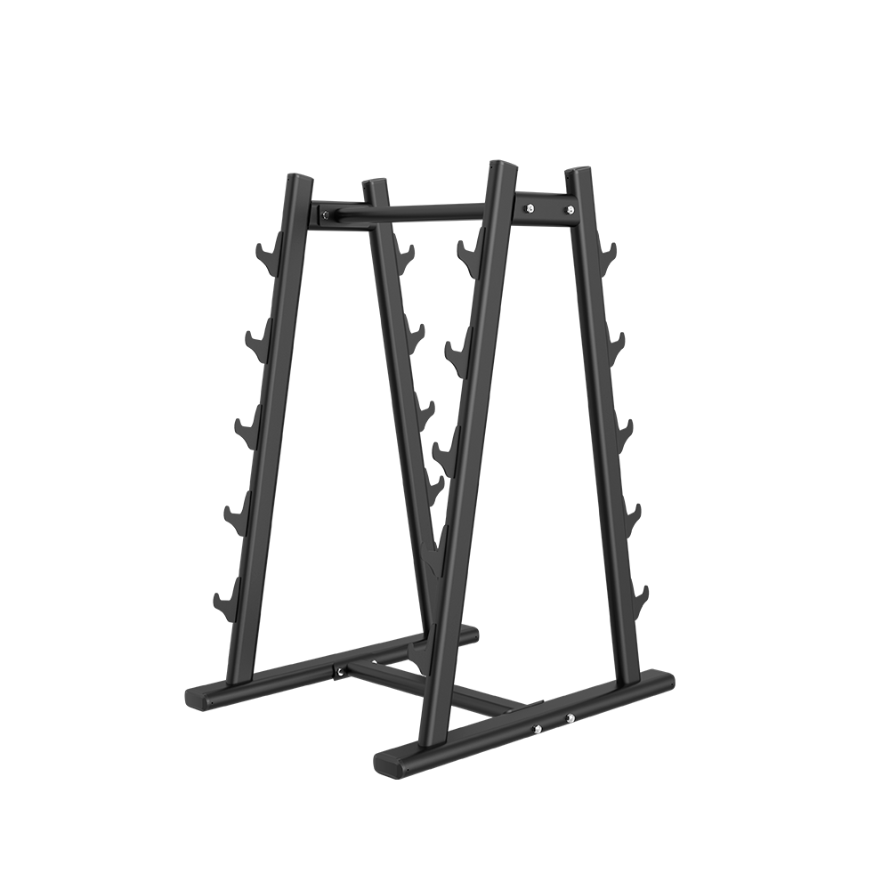

Equipamentos
BOLD
Apresentamos nossa linha de acessórios de academia voltada para o treinamento em peso livre e musculação, projetada para oferecer máxima funcionalidade e praticidade no dia a dia das academias. Cada peça foi pensada para otimizar o espaço e proporcionar uma experiência de treino eficiente, segura e confortável. Com materiais resistentes e designs compactos, nossos equipamentos garantem durabilidade e agilidade, atendendo às necessidades de gestores que buscam soluções práticas e de alta performance para seus alunos. Ideal para maximizar os resultados e facilitar o fluxo de treino em ambientes de alta demanda.
Banco Supino Reto
O banco supino reto é um equipamento fundamental para qualquer academia que busque oferecer um treino completo e eficaz para seus alunos. Ele permite o desenvolvimento do peitoral maior, ombros e tríceps, sendo um dos principais exercícios para o fortalecimento e definição do tronco superior. Ao incluir o banco supino reto em sua academia, você oferece um exercício básico, mas extremamente eficiente, que atende tanto iniciantes quanto praticantes avançados.
Banco Supino Inclinado
O banco supino inclinado é um excelente aliado para o desenvolvimento muscular do tronco superior, com foco específico na parte superior do peitoral. A inclinação do banco proporciona um estímulo diferente do supino reto, ativando a porção clavicular do peitoral, essencial para quem busca um desenvolvimento equilibrado e completo da musculatura torácica. Adicionar o banco supino inclinado à sua academia oferece aos seus alunos a possibilidade de diversificar os treinos, garantindo ganhos mais equilibrados no peitoral.
Banco Supino Declinado
.png)
O banco supino declinado é ideal para trabalhar a parte inferior do peitoral, além de envolver os tríceps e a região anterior dos ombros. Com sua inclinação para baixo, este exercício permite uma ativação mais intensa da porção inferior do peitoral maior, proporcionando um desenvolvimento mais equilibrado e simétrico da musculatura do tronco. Ter um banco supino declinado em sua academia oferece aos alunos a oportunidade de focar em uma área frequentemente negligenciada, completando o treino de peitoral de forma eficaz.
Multi Flight

O Multi Flight é um equipamento versátil que o treinamento de diversos grupos musculares. Ele trabalha principalmente o peitoral, ombros, tríceps, além de ativar as costas e os músculos do core, dependendo da variação do exercício. Agregando ao seu espaço de musculação diferentes possibilidades no espaço de apenas um equipamento.
Panturrilha Sentada
Ao realizar essa variação de exercício sentado, há uma maior ativação do sóleo, permitindo um desenvolvimento equilibrado da panturrilha, especialmente em sua parte inferior. Com o equipamento de panturrilha sentada, sua academia oferece mais possibilidades para o desenvolvimento muscular completo.
Leg Press 45º
Com quatro suportes de carga, aumentando o nível de desafio desse exercício que é um dos mais eficazes para o treinamento de membros inferiores. Ele trabalha principalmente os quadríceps, glúteos e isquiotibiais sendo um dos equipamentos mais procurados nos espaços de musculação. O leg press 45 da Linha Bold traz conforto, segurança e baixa manutenção.
CrossOver Angular
Sua estrutura angular oferece uma amplitude de movimento aprimorada, permitindo treinos mais intensos e completos, além de ser mais compacto que o crossover convencional, otimizando seu espaço. Ideal para diversificar os treinos de seus alunos e trazer variação para sua academia, sendo um dos equipamentos mais adequados para atender as necessidades dos treinos.
CrossOver
Sua estrutura robusta e design inteligente garantem movimentos suaves e controlados, proporcionando resultados superiores em força e definição muscular. Ter o Crossover em sua academia traz diversas vantagens: além de sua durabilidade, graças aos materiais de alta qualidade, ele oferece aos seus alunos uma experiência de treino segura e confortável. O equipamento atende a todos os níveis de treinamento, desde iniciantes até praticantes avançados, possibilitando exercícios funcionais e de isolamento.
Polia Simples
Seu design funcional ocupa pouco espaço e, ao mesmo tempo, oferece enorme versatilidade, sua academia ganha um equipamento essencial, prático e eficiente para resultados consistentes.
Cross Smith
O Cross Smith é um equipamento inovador que combina a versatilidade de um Smith Machine com a liberdade de movimentos de um sistema de cabos, oferecendo dois aparelhos em um só. Com ele, seus alunos podem realizar exercícios de força com a barra guiada, como agachamentos, supinos e levantamento terra, ao mesmo tempo em que têm à disposição uma estação de cabos para exercícios como puxadas, extensões de tríceps e crucifixo.
Gaiola de Agachamento
Uma estrutura fundamental para realizar com segurança e praticidade alguns dos mais importantes exercícios de musculação. Ela permite a realização de agachamentos, levantamento terra e outros exercícios compostos com segurança, oferecendo suporte para movimentos pesados. Com apoio de barras com ajuste de altura, a gaiola proporciona estabilidade, reduzindo o risco de lesões e permitindo que os alunos se concentrem no desempenho.
Banco Scott
Equipamento especializado para o treino de bíceps, oferecendo um apoio que isola perfeitamente os músculos da parte superior dos braços, especialmente os bíceps braquiais. Sua estrutura permite um movimento controlado e eficiente, minimizando o uso de outras partes do corpo e maximizando a ativação do músculo alvo.
Paralela
Esse exercício é altamente eficaz para desenvolver força e massa muscular na parte superior do corpo, ativando principalmente os músculos peitorais maiores, tríceps e deltoides. Com design compacto e moderno.
Banco Lombar

Ter banco lombar em sua academia traz várias vantagens: além de ser um excelente aliado na prevenção de lesões lombares, ela também melhora a postura, a mobilidade e a performance em exercícios compostos como agachamentos e levantamento terra. Seu design seguro e eficaz atende a diferentes níveis de treino, sendo ideal para alunos que buscam fortalecer o core e a parte inferior das costas de forma eficiente.
Banco Reto
Equipamento simples que permite a realização de diversos exercícios de peso livre, utilizado juntamente com halteres e dumbells, possibilitando a realização de diversos exercícios com praticidade e conforto.
Banco 90º
Banco inclinado, utilizado principalmente em áreas de peso livre e para realização de exercícios de membros superiores, com design limpo e eficiência.
Banco Ajustável

Com a possibilidade de ajustar o ângulo do banco, seus alunos podem trabalhar diferentes ativações dos músculos superiores, proporcionando maior diversidade de exercícios em um único equipamento. Seu design compacto e de alta qualidade garante durabilidade e conforto, enquanto a flexibilidade no ajuste dos ângulos permite que seus alunos realizem treinos mais completos e personalizados.
Prancha Abdominal
A Prancha Abdominal é um equipamento essencial para fortalecer o core, trabalhando principalmente os músculos abdominais, oblíquos e região lombar. Com seu design ergonômico, ela proporciona uma execução de exercícios de forma confortável e segura, permitindo aos alunos focar na ativação muscular, sem sobrecarregar outras articulações.
Banco Abdominal Trainer
O Banco Abdominal Trainer é um equipamento projetado para otimizar o treino de abdômen, proporcionando maior conforto e suporte durante a execução de exercícios focados na região abdominal. Seu design ajustável permite que os alunos realizem movimentos controlados, trabalhando de forma eficiente os músculos abdominais, oblíquos e lombares.
T-Bar
O T-Bar Trainer é um equipamento de alta performance, ideal para quem deseja fortalecer e desenvolver a musculatura das costas, ombros e peitorais. Com seu design inovador e movimento controlado, ele permite a execução de exercícios como remadas, promovendo um treino eficaz para a região superior do corpo, com foco especial no trapézio, latíssimos e romboides.
Elevação Pélvica
Opção confortável, prática e compacta para realizar o exercício de elevação pélvica, que é muito popular nos treinamentos de glúteos, sem necessidade de barras adicionais, steps ou bancos do peso livre.
Banco de Alongamentos
Possibilita diferentes mobilidades para valorizar o espaço de alongamentos da sua academia, cuidando da saúde dos seus alunos e facilitando esse processo na rotina de alongamentos.
Suporte Barras
Solução para armazenamento de barras retas e barras w, tornando de fácil acesso o uso e organização do peso livre.